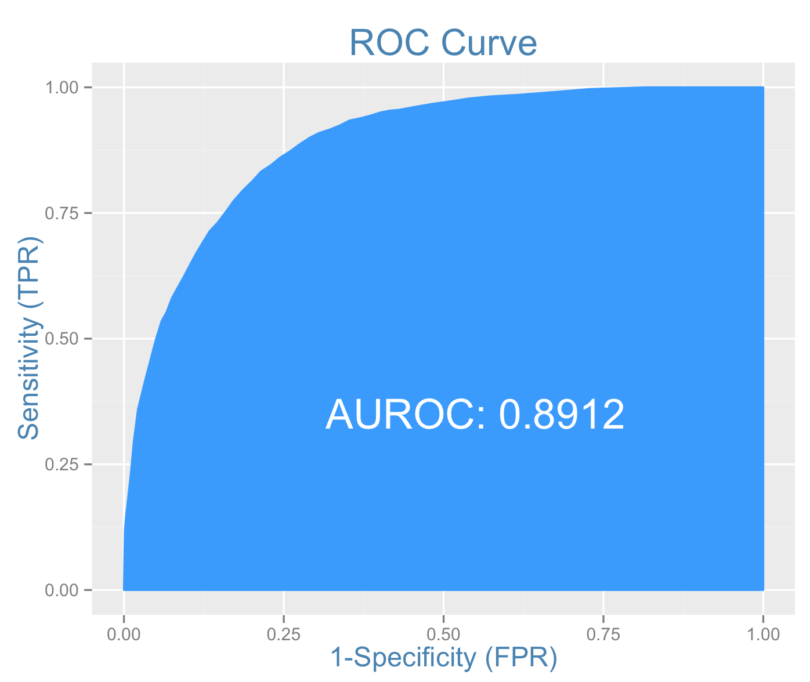

Probit Regression
Probit regression can used to solve binary classification problems, just like logistic regression.
While logistic regression used a cumulative logistic function, probit regression uses a normal cumulative density function for the estimation model. Specifying a probit model is similar to logistic regression, i.e. using the glm() function but with family argument set to binomial(link="probit").
Example Problem
Lets use the same example from logistic regression and try to predict if an individual will earn more than $50K. So before running the code below that builds the probit model, you will have to follow the steps from logistic regression to import and prepare the training and test data.
probitMod <- glm(ABOVE50K ~ RELATIONSHIP + AGE + CAPITALGAIN + OCCUPATION + EDUCATIONNUM, data=trainingData, family=binomial(link="probit")) # build the logit model
predicted <- predict(probitMod, testData, type="response") # predict the probability scores
summary(probitMod) # model summary
#> Call:
#> glm(formula = ABOVE50K ~ RELATIONSHIP + AGE + CAPITALGAIN + OCCUPATION +
#> EDUCATIONNUM, family = binomial(link = "probit"), data = trainingData)
#>
#> Deviance Residuals:
#> Min 1Q Median 3Q Max
#> -4.5104 -0.5506 -0.0005 0.6515 3.6745
#>
#> Coefficients:
#> Estimate Std. Error z value Pr(>|z|)
#> (Intercept) -2.590e+00 1.401e-01 -18.492 < 2e-16 ***
#> RELATIONSHIP Not-in-family -1.330e+00 4.039e-02 -32.929 < 2e-16 ***
#> RELATIONSHIP Other-relative -1.565e+00 1.406e-01 -11.135 < 2e-16 ***
#> RELATIONSHIP Own-child -1.986e+00 8.785e-02 -22.611 < 2e-16 ***
#> RELATIONSHIP Unmarried -1.466e+00 6.308e-02 -23.241 < 2e-16 ***
#> RELATIONSHIP Wife 1.758e-01 6.387e-02 2.753 0.005910 **
#> AGE 1.523e-02 1.358e-03 11.214 < 2e-16 ***
#> CAPITALGAIN 1.744e-04 9.158e-06 19.045 < 2e-16 ***
#> OCCUPATION Adm-clerical 4.955e-01 9.583e-02 5.170 2.34e-07 ***
#> OCCUPATION Armed-Forces 7.364e-01 1.034e+00 0.712 0.476343
#> OCCUPATION Craft-repair 7.247e-01 9.246e-02 7.838 4.59e-15 ***
#> OCCUPATION Exec-managerial 1.141e+00 9.117e-02 12.520 < 2e-16 ***
#> OCCUPATION Farming-fishing 7.620e-02 1.237e-01 0.616 0.537808
#> OCCUPATION Handlers-cleaners 3.048e-01 1.295e-01 2.353 0.018599 *
#> OCCUPATION Machine-op-inspct 4.044e-01 1.060e-01 3.816 0.000136 ***
#> OCCUPATION Other-service 8.727e-02 1.098e-01 0.795 0.426548
#> OCCUPATION Priv-house-serv -1.605e+00 1.245e+00 -1.289 0.197400
#> OCCUPATION Prof-specialty 9.801e-01 9.354e-02 10.477 < 2e-16 ***
#> OCCUPATION Protective-serv 8.934e-01 1.271e-01 7.031 2.06e-12 ***
#> OCCUPATION Sales 8.024e-01 9.325e-02 8.605 < 2e-16 ***
#> OCCUPATION Tech-support 9.705e-01 1.157e-01 8.387 < 2e-16 ***
#> OCCUPATION Transport-moving 6.133e-01 1.054e-01 5.821 5.86e-09 ***
#> EDUCATIONNUM 1.575e-01 7.696e-03 20.464 < 2e-16 ***
#> ---
#> Signif. codes: 0 '***' 0.001 '**' 0.01 '*' 0.05 '.' 0.1 ' ' 1
#>
#> (Dispersion parameter for binomial family taken to be 1)
#>
#> Null deviance: 15216.0 on 10975 degrees of freedom
#> Residual deviance: 8753.6 on 10953 degrees of freedom
#> AIC: 8799.6
#>
#> Number of Fisher Scoring iterations: 8Almost all the Xs have p values less than 0.05. So the significance of predictors should be of any concern here. It is okay to ignore few category levels of OCCUPATION not being significant, as most of the other levels have acceptable p values.
Model Diagnostics
The model diagnostics for probit models are the same as seen in case of logistic regression.
Determine Optimal Cutoff
library(InformationValue)
optCutOff <- optimalCutoff(testData$ABOVE50K, predicted_scores)[1]
#=> [1] 0.88ROC Curve
plotROC(testData$ABOVE50K, predicted_scores)
The area under ROC curve is slightly higher than that of the logit model’s. Therefore this could be the preferred model.
Concordance
Concordance(testData$ABOVE50K, predicted)
#> $Concordance
#> [1] 0.891276Concordance is numerially similar to that of the logit model’s.
Misclassification Error
misClassError(testData$ABOVE50K, predicted_scores, threshold = optCutOff)
#=> 0.0894The misclassification error is marginally higher than that of logit model.
Specificity and Sensitivity
sensitivity(testData$ABOVE50K, predicted_scores, threshold = optCutOff)
#> 0.359541
specificity(testData$ABOVE50K, predicted_scores, threshold = optCutOff)
#> 0.9780574The ability to detect the events (i.e. persons earning more than $50K), is 5% higher than that of logit model with same formula. But the specificity that is pretty high is marginally lower compared to logit.
Confusion Matrix
confusionMatrix(testData$ABOVE50K, predicted_scores, threshold = optCutOff)
# The columns are actuals, while rows are predicteds.
#> 0 1
#> 0 18810 1507
#> 1 422 846